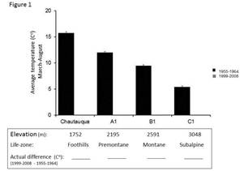
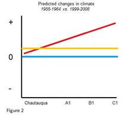

Lab: Instructor Resources
Grasshoppers and Climate Change Activity
Nearly 50 years ago, Dr. Gordon Alexander surveyed the grasshopper communities at several life-zones along an elevation gradient in the Rocky Mountains of northern Colorado. All of these surveyed sites were next to or near weather stations. Since 2006, a new resurvey program has been established to examine how climate has changed over the last half decade at each life-zone and in turn, how this warming has impacted the ecology of grasshopper communities.
This activity uses actual climate and weekly resurvey data to allow students to 1) examine how climate has changed along an elevational gradient, 2) test student predictions regarding how grasshoppers will advance their timing to adulthood, and 3) model how they expect grasshoppers to advance given different future warming scenarios.
Steps of Grasshoppers and Climate Change activity:
Begin the activity by presenting the talk “Grasshoppers and Climate Change” provided below. This talk provides the basic context for the activities and there are notes associated with each page for instructors. The talk also allows instructors to guide students through each of the separate activities they will examine (see below). The presentation is intended to address several areas of interest, but it can easily be shortened or modified to best meet your specific needs. Following the talk, students will be asked to work in groups to address 3 multipart questions.
Grasshoppers and Climate Change
For a more detailed introduction and background to this project please see the following manuscripts as well as the broader links associated with this web site.
Nufio, C.R., C.R. McGuire, M.D. Bowers and R. Guralnick. 2010. Grasshopper community response to climatic change: variation along an elevational gradient. PloS one. Vol. 5, e12977
Nufio, C.R, Lloyd K. J., Bowers M. D., and Guralnick, R. 2009. Gordon Alexander, Grasshoppers, and Climate Change. American Entomologist. 55:10-13
Suggestion: This talk may follow other activities that may supplement or better set up this system given your class focus. This activity may, for example, follow other modules on life-zones and/or climate change.
QUESTION 1. How has climate changed along an elevational gradient in the Rocky Mountains of Northern Colorado?
Following the talk, students can be broken up into four groups (of 4-5 students), with each group being in charge of processing the data associated with a given site. The four sites are Chautauqua Mesa, A1, B1 and C1 and they represent the foothills, lower montane, montane and subalpine life-zones, respectively. If there are more students than can fit in 4 groups, you can easily create independent groups that can work on similar sites. You will just need to take this into account in activity 2 below.
The work sheets and climate data associated with each site (accessible via student resources section) will provide students figures, climate data and instructions to predict and then quantify how climate has changed along an elevational gradient in the Rocky Mountains of Northern Colorado.
Details of Activity: Students are provided a figure that shows the average temperatures during March-August at different life-zones during the 10 years (1955-1964) around the time of the initial grasshopper surveys (Figure 1). The average temperatures during the months of March-August are of special interest as temperatures during March become high enough to allow grasshoppers to develop (see Growing degree days ) and by August, all species of interest have become adults.
An instructor can lead the students through the figure provided (it is in the presentation as well) and can ask them to interpret the figure as a class. Why does the average temperature decline with elevation? How might this affect the amount of energy that is available to plants and insects that are developing? How might this help explain the types of communities associated with the different life-zone?

The students will then be instructed to work within their groups to make predictions about how they imagine climate to have changed along the gradient. The students will use figure 2 to articulate how they may imagine that warming might occur. The figure below highlights three potential predictions, 1) that warming will be greatest higher on the mountain (red), 2) that warming will be uniform across the mountain (yellow) and 3) that there hasn’t been any warming (blue). There can be many other predictions, such as a uni-modal prediction where A1 and B1 have warmed but not Chautauqua and C1, or there could be models that assume that some sites have cooled. The important point is that students discuss their thoughts and use the figures to illustrate their predictions. The instructor can have representatives from different groups come up to the chalk board to draw and explain their predictions. The instructor can then open the floor to other potential predictions.

Following the discussion about predicted changes and how this would be illustrated, students in each group will use Table 1 to calculate the average March-August temperatures associated with the recent survey (1999-2008) to determine and illustrate (using Figure 3) how average temperatures have changed over the last 50 years.
Insight. The average temp at Chautauqua Mesa has not warmed significantly, and while most of the warming has occurred in the montane (B1) and subalpine (C1), an examination of the alpine shows that the alpine has warmed lass than A1, B1 and C1. How might this added information (re: March-August at D1 warming only by XX in the last 50 years) affect how they draw their diagram?
This exercise will lead into the students making predictions regarding how they expect the timing of adulthood of grasshoppers to change along the gradient (Figure 4). Some students may predict that development at sites may be negatively affected, given that the grasshoppers will experience hotter temperatures than they might be used to. These predictions lead to the second part two of this exercise.
QUESTION 2. How have grasshopper communities responded to non-uniform warming along the elevational gradient?
During 1959-1960, Gordon Alexander and his team surveyed grasshoppers on a weekly basis and recorded the species that were present and their developmental stages (grasshoppers have 5 juveniles stages before they reach adulthood). In this exercise, students will use Alexander’s survey data, notably the earliest date to adulthood for each species during1959-1960, to determine the degree to which grasshoppers have advanced their timing to adulthood during the last 50 years.
Details of Activity: For this activity, instructors must create collecting bins that represent each of the weekly surveys conducted during the 2007 surveys at each of the sites. These bins will need to be populated by printing and cutting out provided images of the different grasshopper species that occur at these sites. The number and species that will be placed into each collecting bin is available in the key provided below. While a teacher may deviate from the number of a given species placed in each bin, in order for this activity to work, the species found within each collecting bin must be correct.
Key to Grasshopper Surveys Labels for Collecting Bins
The images that will need to be printed for each site and instructions on how many sheets to print are available here.
| Chautauqua Mesa (Foothills, 1752 m) |
A1 (Lower Montane, 2195 m) |
B1 (Montane, 2591 m) |
C1 (Subalpine, 3048 m) |
A field guide students will use to identify the grasshopper species is available here.
Running the Activity. Students in the different groups will be given 6-8 sampling bins associated with their assigned sites. These bins reflect the grasshopper species that were surveyed during each of the collecting events. Each numbered bin has an ordinal date (ordinal day 1 being January 1st, ordinal day 365 being December 31st) and the goal is to have the students determine the first ordinal date in which a species became an adult in 2007. Once they determine this for each species, they will compare this ordinal date to the earliest ordinal date to adulthood during the 1959-1960 survey to determine whether a species has advanced their timing to adulthood (and by how much) or whether the species has not advanced. Relative changes in the timing to adulthood will differ across the sites. The use of sampling bins will allow the students to imagine how the data was collected and processed.
After the students determine the changes in phenology, each group will have a chance to talk about their findings within their group and they will have a chance to address a few questions that will help them guide their thinking. Each group will then get a chance to go up and present their findings to the class and talk about their conclusions. After the last group presents, the students can discuss whether their initial predictions of how grasshoppers advanced was supported. They can then draw the pattern on figure 5 (in Question 1).
QUESTION 3. How might grasshoppers advance their phenologies given future estimates of climate changes?
Grasshopper advancement to adulthood at different sites is largely a response to a more rapid accumulation of heat energy (Growing Degree Days) that occurs in warm years. Using the actual temperature data at each site students will predict future changes in grasshopper phenology based on different warming scenarios.
Details of activity: Using actual climate data from each site (the average min and max for each ordinal date), students will calculate and graph how GDDs accumulate at each site. This data is available as an Excel sheet next to the student worksheets (Chautauqua Mesa, A1, B1, C1 ). Students will need to understand the formula for determining GDDs to determine the GDDs for a given site and then determining how these GDDs accumulate over time. The latter can be determined by a column that adds that day’s GDDs to those that accumulated previously. In other words accumulated GDDs for day 2 is = sum (GDDs day 2 + GDDs day1). The students can just drag that formula down to day 365. The students will compare the accumulation of GDDs with that of the other sites and answer questions about how the sites might differ in when GDDs begin to accumulate, total number of GDDs at each site etc.
Students will then examine how GDDs would accumulate given predicted warming scenarios of 1, 3, and 5.5°C by 2100. They will the look at a grasshopper species that occurs in the alpine to determine how its phenology might change given each scenario and whether that species can experience multiple generations given some of these scenarios.